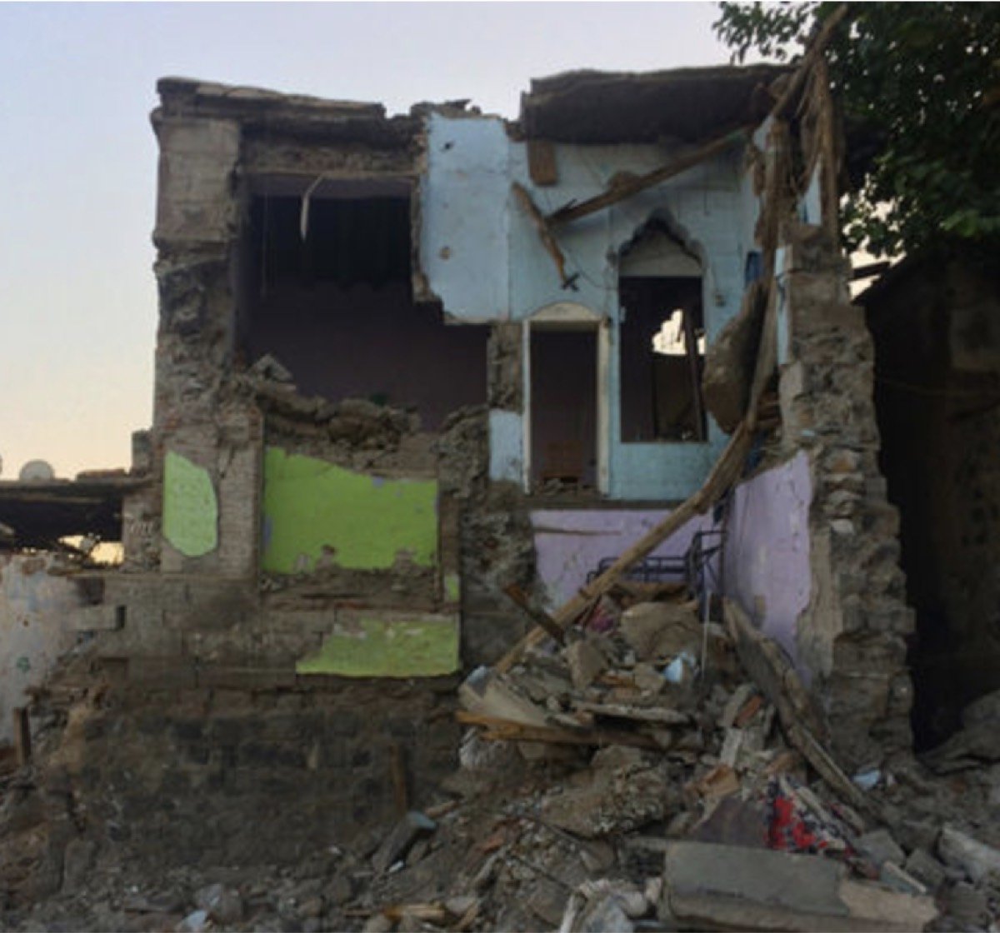
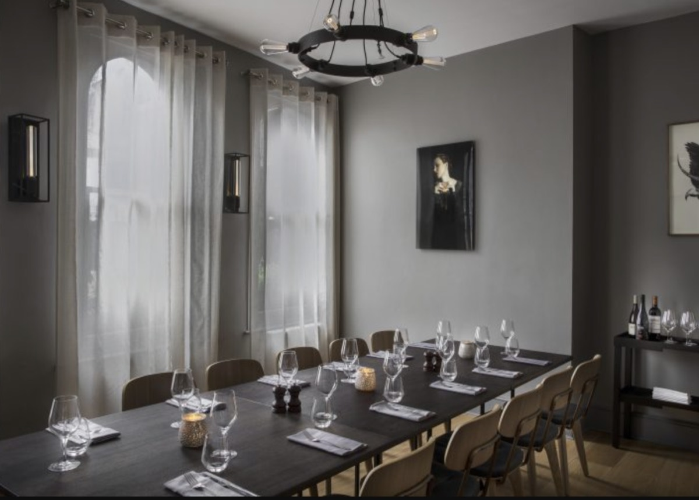
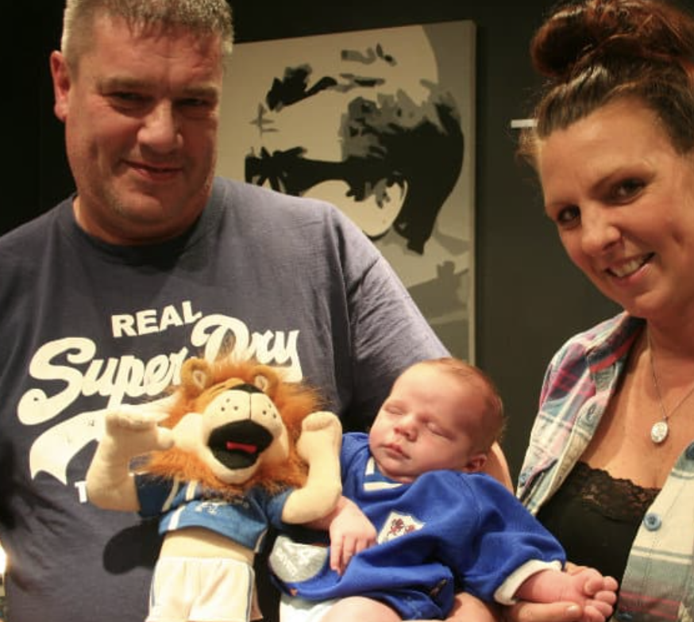
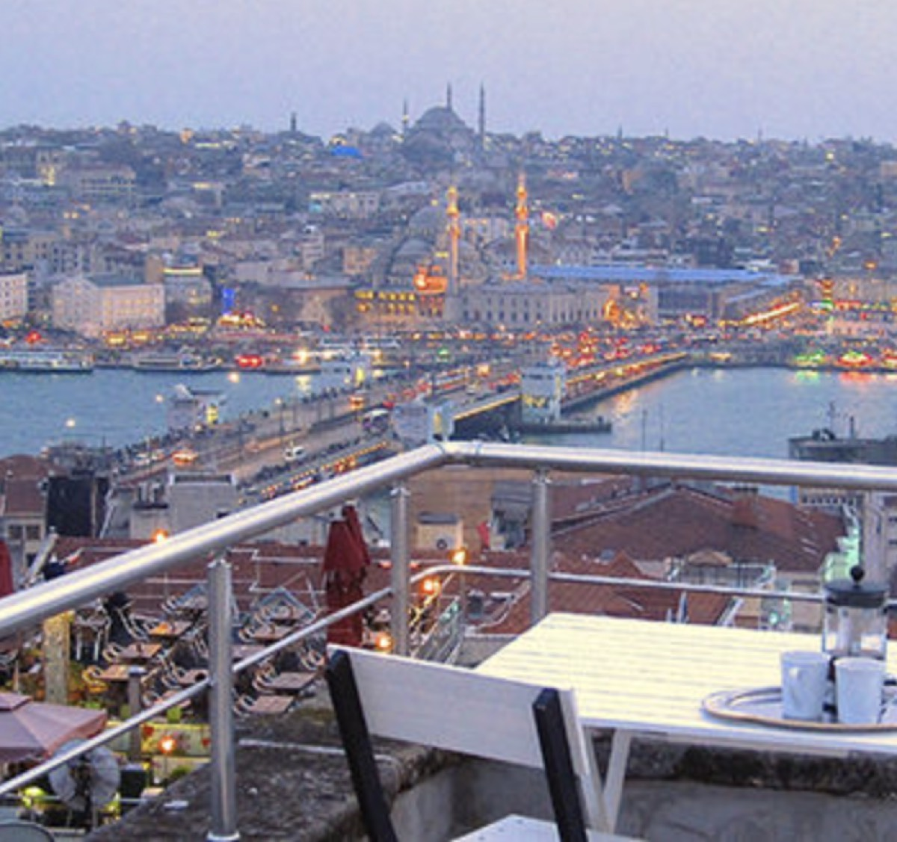
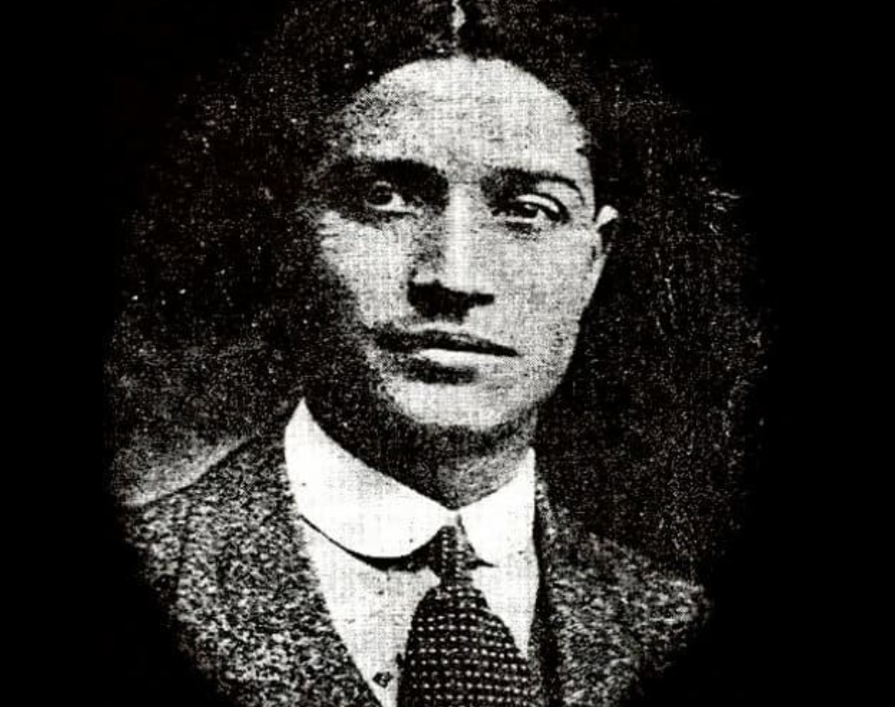
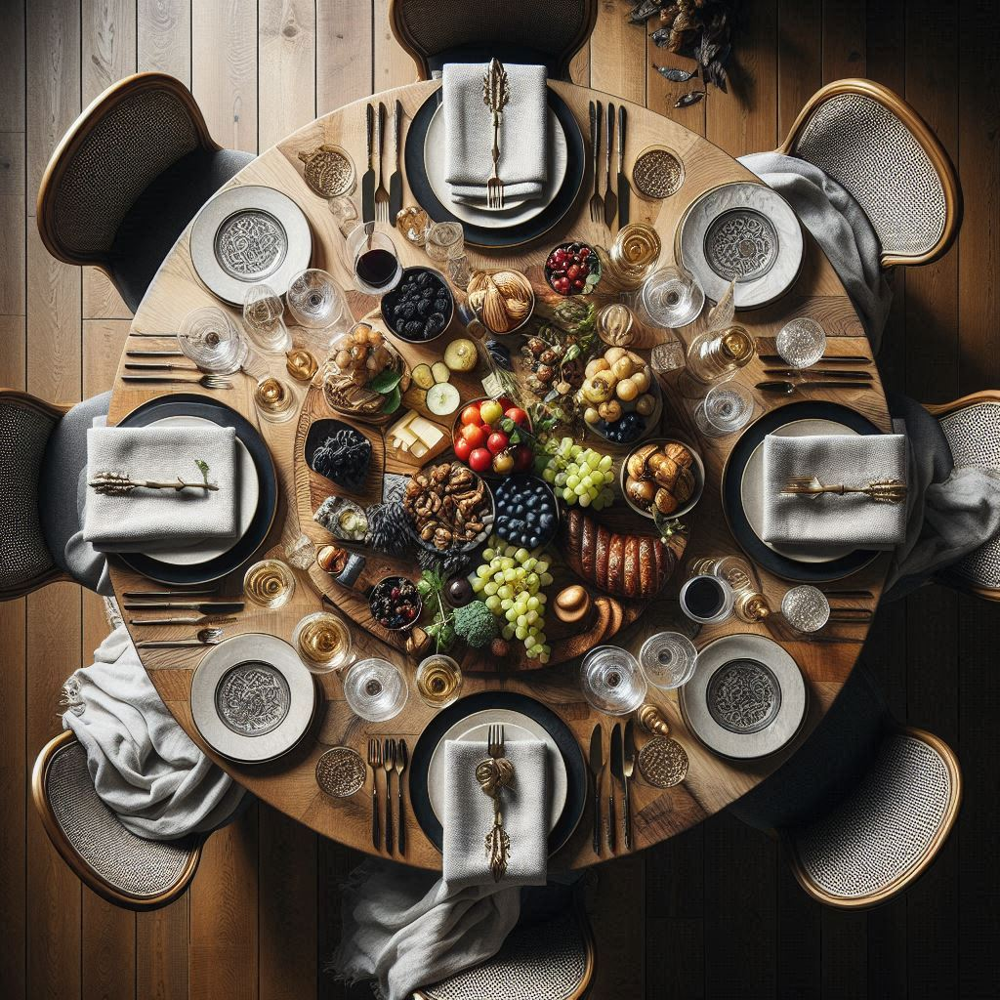
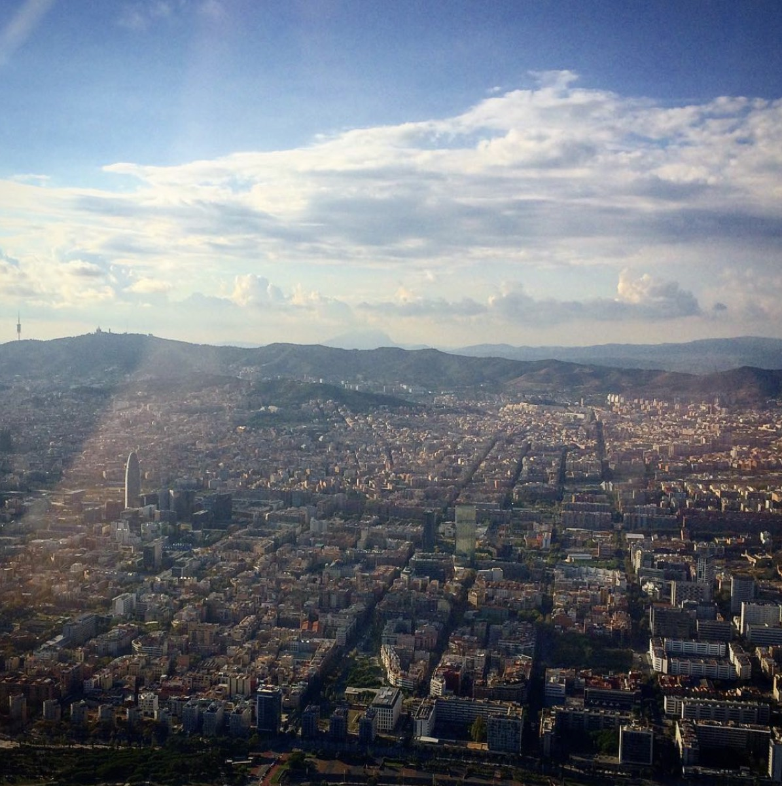
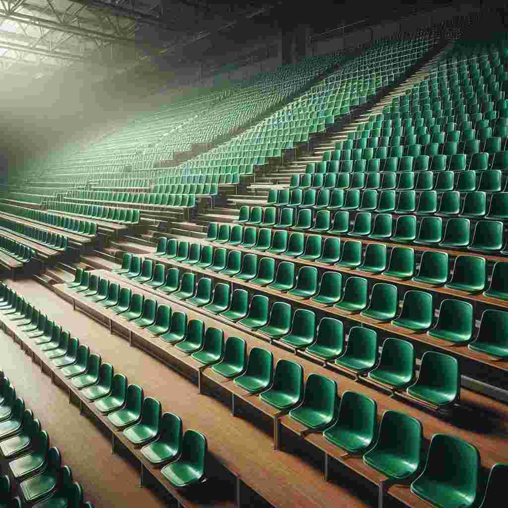
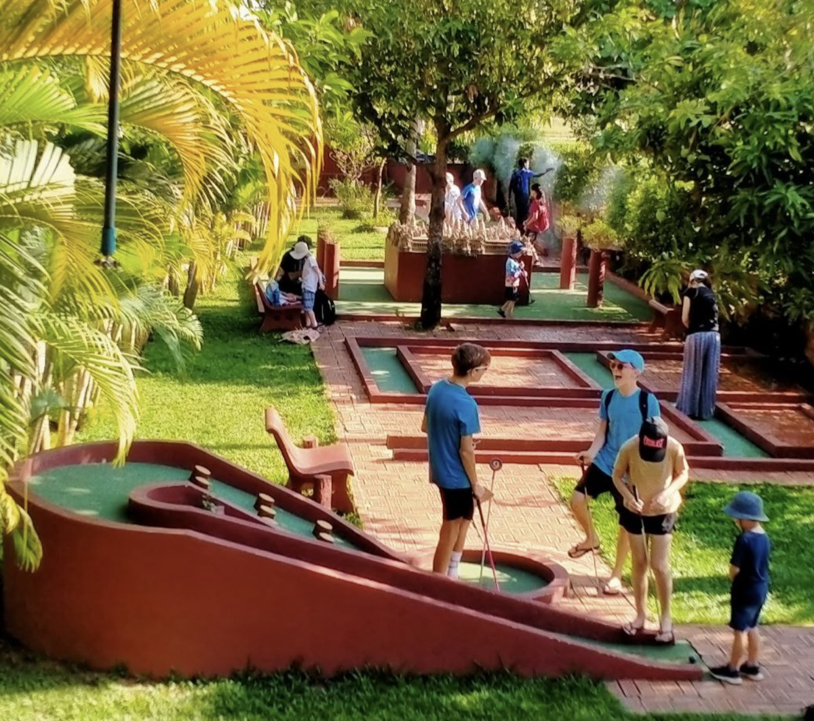

The harrowing escape of a North Korean defector
An exclusive interview with an escapee from Kim Jong-un's hermit state. 'It was either defect, or die.'

Carnage on the edge of Europe
Live reporting and exclusive images from the devastated neighbourhood of Sur, Diyarbakir, following a clash between guerrilla fighters and the army.
Pole position: The Arctic Circle's first national champion
How FK Bodø/Glimt became the world's first football club north of the 66th parallel to win their national league.

After the attack: Dinner at Arthur Hooper's
Arthur Hooper's will never be known simply for its food - but Borough Market deserves a return to business as usual.

Dad names baby ‘Bermondsey Millwall Den' – without telling wife
'If David Beckham can name his son Brooklyn, then I can name mine Bermondsey!'

Travel review: A weekend in Istanbul
Where to stay and what to do in Turkey's City of Contradictions™️.
Football in the shadows
The extraordinary story of how a secretive military football club from North Korea stunned Asia.

The forgotten story of Hussein Hegazi
The mercurial Dulwich Hamlet FC striker who became 'the Father of Egyptian football'.
Cairo travel review: Embracing the madness
Cairo is a safari for the ears, an aural amuse-bouche. Even the dead of night is soundtracked by traffic, music and boat horns echoing down the Nile.
The real great fire of London - the 1212 blaze extinguished from history
How 3,000 died in a devastating fire that spread across Southwark - before being overshadowed by London's more famous blaze.

Food review: Darwin Brasserie
A dispatch from London's infamous 'fryscraper', where lunch is served with a view.
North Korean soldier reveals life in hermit state
In an exclusive interview, a former North Korean soldier revealed the army is plagued by starvation, cruelty, and fear.

Barcelona travel guide
Living the high life with a helicopter tour of the Catalan capital

Empty seats and AWOL players
The story of an Irish victory amid farcical conditions at the chaos-strewn Carling Nations Cup.
The coldest summer since Mark Twain
A sporting season of dulled sensations and frozen league tables for the Irish diaspora.
48hrs in Picasso's home town
It is impossible to visit Malaga and not be acutely aware you are exploring Pablo Picasso’s home town.
How the mighty green giants have fallen
The astonishing decline of Ireland’s international team since the heady days of the 2002 World Cup.

The man behind Cambodia's first crazy golf course
'People in town don't understand,' says Mr Tee. 'They think I'm crazy!'